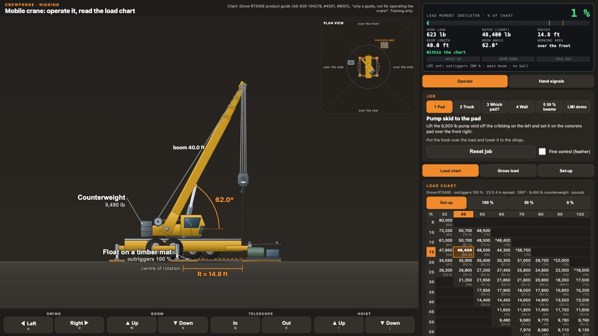

Mobile crane: operate it, read the load chart
Run a rough-terrain crane with the buttons (or the keyboard): swing, boom up and down, telescope and hoist. Pick a job, lift the load and set it where it goes. The load chart, the radius and the load moment indicator update as you move, and the indicator stops you when the lift goes past the chart.

Open full screen · Training only: the load chart is from a published product guide that says it is only a guide and not for operating the crane. On the job, use the crane's own chart, the operator's manual and the lift plan.
What this simulator shows
- Five jobs, from setting a pump skid on a pad to lifting over a wall, plus a load moment indicator demo.
- The load chart for the outrigger set-up in use (fully extended, half extended or retracted), with the cell for your boom length and radius lit up.
- The gross load: the load plus the hook block and rigging, which all count against the chart.
- A plan view of the working area: over the front, over the side and over the rear.
- The crane hand signals, side by side with the controls they ask for.
Reading the chart in words
Find the column for the boom length and the row for the radius. If the radius falls between two rows, use the longer radius. The number in the cell is the most the crane may lift there, and the hook block and rigging come off it first.
Worked example
- With 40 ft of boom at a 15 ft radius, on outriggers fully extended, the chart in the simulator allows 48,400 lb. The 623 lb hook block alone is about 1 % of that.
See how a lesson works
The free sample lesson, Hitches: narrated simulator pages, practice questions and a printable summary sheet. No sign-up.
More free simulators
Slings, load weight and CG, block and tackle, hoists, moving loads and wire rope, plus hydraulics, alignment and pumps.